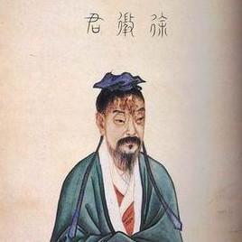
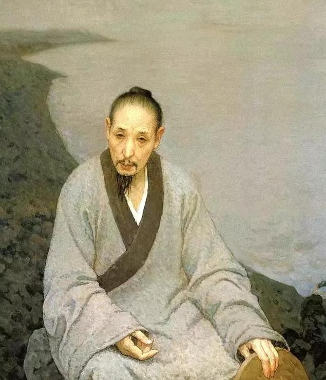
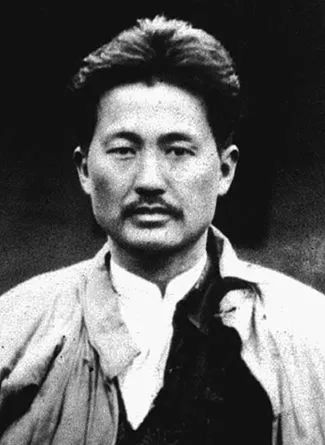

南昌名人

徐稚（徐孺子）
东汉著名隐士、豫章高士，以“恭俭义让，淡泊明志”著称。王勃《滕王阁序》中“人杰地灵，徐孺下陈蕃之榻”即指其事。
他拒不出仕，躬耕授徒，被尊为“南州高士”，是南昌早期人文精神的象征。今南昌有“孺子亭”“孺子路”纪念其德行。

八大山人（朱耷）
明末清初杰出画家、书法家，宁王朱权后裔。明亡后削发为僧，以“八大山人”署名作画，笔意孤傲冷峻，开创大写意花鸟新风。
其作品如《荷花水鸟图》《孤禽图》充满悲愤与哲思，影响深远。南昌青云谱道院为其故居，现为“八大山人纪念馆”。

方志敏
无产阶级革命家、军事家，江西弋阳人，长期在南昌从事革命活动。1924年加入中国共产党，是赣东北和闽浙赣革命根据地主要创建者。
在狱中写下《可爱的中国》《清贫》等不朽篇章，表达对祖国深沉的爱与信仰。南昌“方志敏广场”铭记其英烈精神。